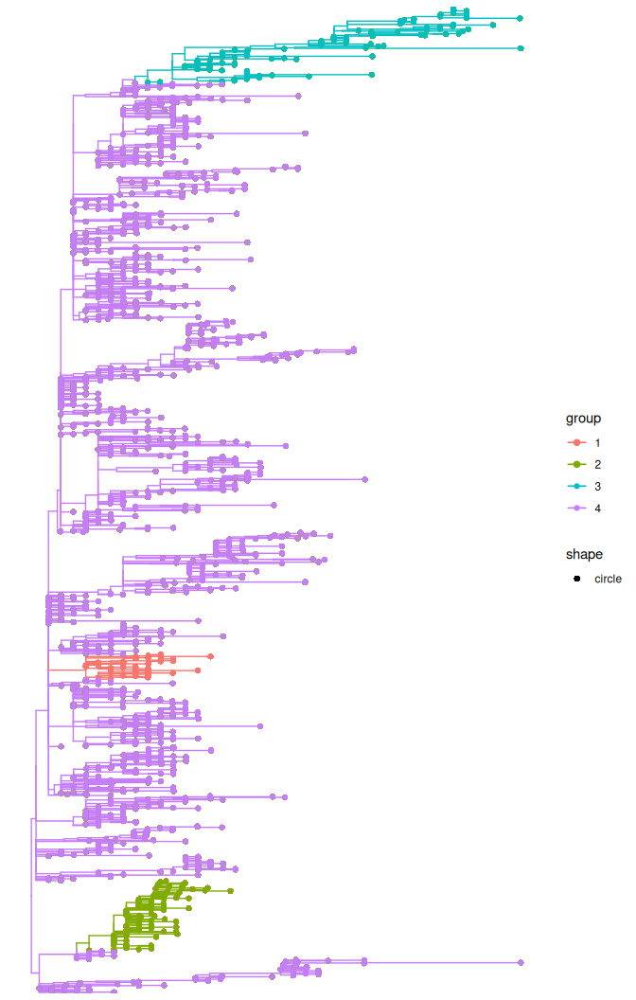

Update of a treestructure object with new sequences
Vinicius Franceschi and Fabricia F Nascimento
2025-09-26
Source:vignettes/updating_treestructure.Rmd
updating_treestructure.RmdIntroduction
In this tutorial, we will exemplify how to update a previous treestructure
object with new sequences using a down sampled version of the Ebola dated tree, which is publicly available.
First, we will load all the R packages that we will use in this tutorial.
Now we can read the down-sampled time-tree for Ebola. In this pruned tree, we have 1,310 tips.
pruned_tree <- readRDS( system.file('Ebola_down_sampled_tree.rds',
package='treestructure') )Assign clusters using node support
Now we will assign clusters using the posterior probability node support to the Ebola down-sampled phylogenetic tree:
trestruct_res <- trestruct(pruned_tree,
minCladeSize = 30,
nodeSupportValues = TRUE,
nodeSupportThreshold = 95,
level = 0.01)Because treestructure will take several minutes to run, we can load the results:
trestruct_res <- readRDS( system.file('downsampled_tree_struc.rds',
package='treestructure') )
plot(trestruct_res, use_ggtree = T) + ggtree::geom_tippoint()The treestructure analyses resulted in 4 clusters.
Update a previous treestrucuture object with new sequences
To update the previous treestructure object with new sequences, we will now use
the maximum likelihood Ebola tree.
Note that this new tree must be rooted, but does not need to be time-scaled or binary.
#Note that this tree has more sequences than the previous tree used in this
#tutorial.
new_tree <- ape::read.nexus( system.file('Makona_1610_genomes_2016-06-23.ml.tree',
package='treestructure') )
#now we can root the tree using mid-point rooting for illustration
ml_rooted_tree <- phangorn::midpoint(new_tree)
#now we need to remove the quotes from the tip names (to avoid an error with
#treestructure function)
ml_rooted_tree$tip.label <- unlist(lapply(ml_rooted_tree$tip.label,
function (x) gsub("'", "", x)))And without the need to re-estimate a timetree or re-run trestruct from scratch,
we are now able to add the new sequences to the existing treestructure object:
trestruct_add_tips <- addtips(trst = trestruct_res, tre = ml_rooted_tree)
plot(trestruct_add_tips, use_ggtree = T) + ggtree::geom_tippoint()
If you would like to compare the sequence names that comprise each cluster in each tree, you can do:
#compare sequences in cluster 1 from trestruct_res object and the
#trestruct_add_tips object
tree1_cluster1 <- trestruct_res$clusterSets$`1`
tree2_cluster1 <- trestruct_add_tips$clusterSets$`1`
length(tree1_cluster1)
#> [1] 30
length(tree2_cluster1)
#> [1] 41Note that the length of tree1_cluster1 and tree2_cluster1 is different.
That is because we added tips from the ML tree, ml_rooted_tree, to the
treestructure object, trestruct_res.
You can also see that all elements in tree1_cluster1 is contained in tree2_cluster1